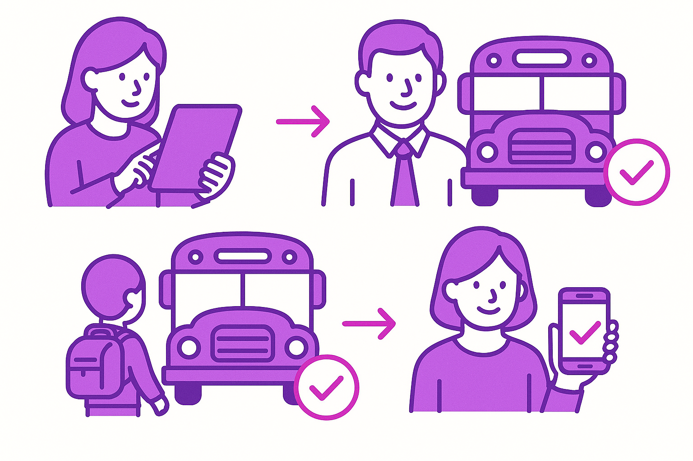

셔틀버스 관리 시스템
Web/App 기반 셔틀버스 통합 관리 솔루션 소개
1. 시스템 개요
실시간 탑승/하차 정보 제공으로 학부모 불안감 해소함
관리자, 선생님, 학부모 등 모든 사용자를 위한 맞춤형 기능 제공함
반응형 웹과 전용 앱으로 언제 어디서나 편리한 접근성 보장함
2. 주요 기능 요약
차량 배차, 노선 관리, 요일별 등하교 탑승자 관리를 하나의 페이지에서 해결
화면 터치 방식의 간편하고 정확한 승/하차 체크 시스템 구현함
탑승 신청 기반 좌석 자동 배정 및 수동 조정 기능 제공함
탑승하지 않는 학생을 학부모가 직접 등록하여 원활한 승차 관리 가능
모든 셔틀버스 관련 업무를 하나의 관리체계에 통합
3. 사용자 역할별 접근
관리자:
시스템 전체 설정, 노선/사용자/차량 관리 등 총괄
선생님:
학생 승하차 체크, 좌석 재배치, 미탑승자 관리, 차장 관리, 분실물 등록
학부모/학생:
학생 승하차 확인, 미탑승 등록, 분실물 확인, 탑승 신청
4. 관리자 페이지 상세
차량 등록: 운행 차량 번호와 종류 설정
선생님 관리: 버스 담당 교사 등록/배정
버스 설정: 버스별 노선 설정, 목적지 등록
탑승 학생 관리: 버스/요일별 탑승 학생 등록/좌석 배치
5. 선생님 페이지 상세
학생 좌석 클릭으로 승/하차 정보 표시
마우스 우클릭으로 학생 좌석 조정 가능
결석 처리, 조장 임명
분실물 등록/관리
6. 탑승 확인 기능
버스 탑승 정보를 실시간 확인
자녀의 미탑승 체크
분실물 확인
7. 탑승 신청 기능
목적지와 등하교/방과후 선택하여 탑승 신청함
원하는 목적지 없을 경우 목적지 신청 가능

8. 실제 사용 시나리오
신청:
학부모가 앱으로 탑승 신청 → 관리자 승인 및 좌석 배정
승차:
교사가 정류장에서 태블릿 화면으로 탑승 체크 → 탑승 확인 화면에 승차 정보 전송
하차:
교사가 하차 체크 → 탑승 확인 화면에 하차 정보 전송
9. 데이터 관리
모든 탑승/하차 기록은 서버에 안전하게 저장 및 관리됨
각종 목록 정보는 엑셀 파일로 일괄 등록 및 다운로드 가능
10. 좌석 배정 프로세스
목적지, 학년, 성별을 고려해 시스템이 좌석을 자동으로 배정함
관리자가 학생 특성(교우관계, 멀미 유무 등)을 고려하여 수동으로 좌석 조정 가능
배정된 좌석 정보를 앱을 통해 학생 및 학부모에게 안내함
Q&A
← 이전
다음 →